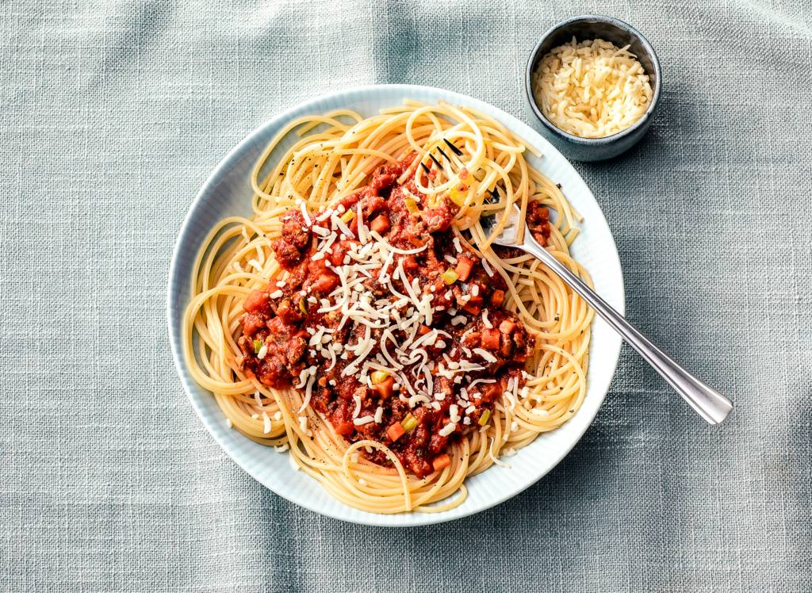

pasta bolognaise

indrediënten
- 500g gehakte vlees
- 500g spaghetti
- olie
- 850g tomaten
- 1 wortel
- 1 ajuin
- 2 uitjes
- 50cl bouillon
bereiding
- snijd de knoflook,de ui en de wortel in kleine blokjes
- verhit de olie in een redelijk grote pan. bak de knoflook,ui en wortel al roerend 5minuten op laag vuur
- Verhoog het vuur en voeg dan het vlees toe. Bruin en roer zodat het vlees niet samenklontert.
- Voeg de bouillon, de rode wijn, de eerder grof gesneden tomaten, de suiker en de gehakte peterselie toe. Kook het water.
- Zet vervolgens het vuur lager en laat afgedekt 1 uur tot 1 uur 30 minuten sudderen, zodat de wijn verdampt.
- Kook de spaghetti, doe ze in een schaal en voeg de bolognesesaus toe.
- Leg op de laatste laag lasagne alleen bechamel en bedek met geraspte kaas. Strooi er een paar klontjes boter over.
- Bak ongeveer 25 minuten koken.